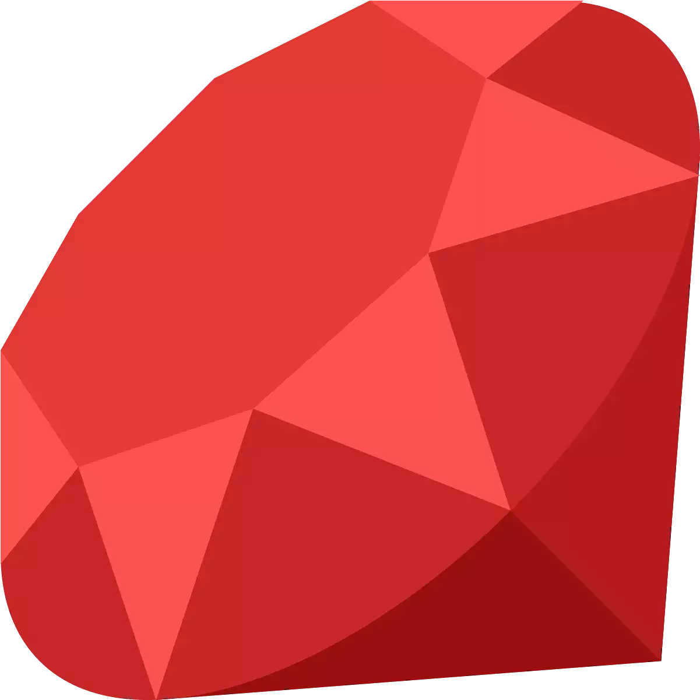
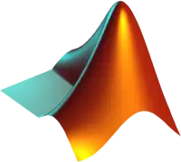
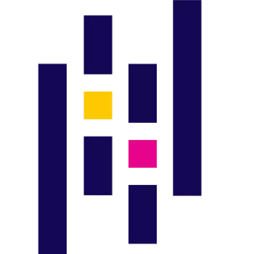
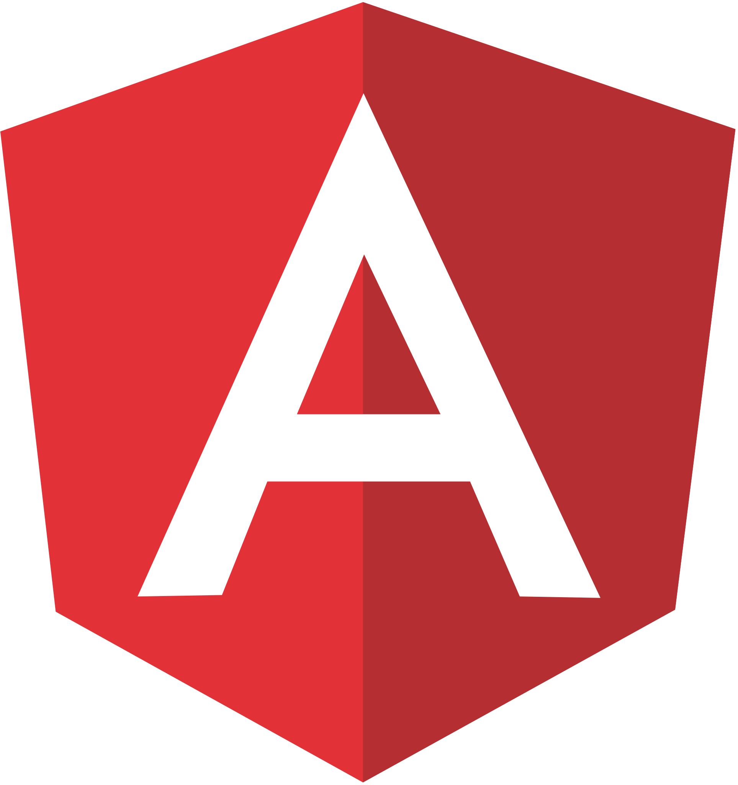

Sauban Musaddiq
Computer Science Grad student at Arizona State University
Software Engineer with over two years of full stack web development experience. Actively seeking Full-time Job opportunities in Data Science/SDE for 2021.

Master of Science(MS).
Major: Computer Science
2019-2021
Arizona State University
Master of Science
Computer Science
Coursework:
- Data-Intensive Systems for ML
- Statistical Machine Learning
- Artificial Intelligence
- Multimedia and Web Databases
- Data Visualization
- Topics in Natural Language Processing
- Intro to Image Processing and Analysis
- Data Science
- Foundations of Algorithms
2013-2017
PES University
Bachelor of Engineering.
Computer Science and Engineeringy
Coursework:
- Advanced Algorithms
- Advanced Data Structures
- Machine Learning
- Natural Language Processing
- Big Data
- Software Engineering
- Operating Systems
- Database Management Systems
2011-2013
St Aloysius PU College
11th - 12th (High School)
May,2017 - Jul,2019
Software Development Engineer
Infibeam Avenues
- Developer for buildabazaar.com, a SaaS platform to create personalized Ecommerce websites. The Platform hosts over 30,000 stores, with each website sharing a single codebase.
- Worked as a Full Stack Dev with exposure to end to end product development, from design to testing to deployment.
Responsibilities:
- Development and integration of new Modules and Plugins to the Platform. E.g.: Integration of services like Payment Gateways, E-Commerce Analytics tools and Modules like Layout Editor, Product Carousels to the Platform.
- Large scale restructuring of codebase to better fit industry standards like optimizing page speed (Google Page Speed).
- Implemented Quality and Cost Based Selection (QCBS) and other modules for products and services in the bidding system of Indian Government’s E-Commerce Marketplace (GeM) platform.
Technologies:
- Ruby on Rails
- AngularJs
- Javascript, JQuery
- Git, MYSQL, Docker, Unix Shell.
Jul,2019 - Aug,2019
Software Consultant (Remote)
Infibeam Avenues
- Entrusted with consultancy work after leaving the SDE job for graduate studies. Coordinated with the technical support team remotely to develop and integrate client specific plugins for the E-Commerce sites in buildabazaar.com.
- Performed on-call dev operations duties to handle unusual fulfilments and payments.
Jan 2017- April 2017
Software Developer Intern
Infibeam Avenues
- Built a platform to automate the creation of hybrid mobile apps (that work across platforms behaving like native apps) for E-commerce stores using ionic framework. Created a web interface for creating and editing the apps.
Paraphrase Identification on PAWS dataset
- Developed an NLP model to identify paraphrases, on a dataset containing sentence pairs with high lexical overlap.
- Achieved an accuracy of 92% using a BERT based model. Explored alternate models like a KNN based model and a BERT sentence embedding model that matched the performance with the BERT Model.
Tools and Technology: PyTorch, BERT, KNN, Transformers.
Gesture Recognition from Multimodal Sensor data.
- Explored different latent dimension discovery methods and different multimodal data representations.
- Implemented Gesture classification algorithms, representative gesture identification using Page Rank algorithm, Gesture clustering using Laplacian Spectral clustering and other clustering methods.
Tools and Technology: Python, Dimensionality Reduction, Vectorization, Page Rank Algorithm.
Programming
90
80
65
75
75
90
Data Science
85
80
85
90
75
75
70
90
Web Development
90
80
90
90
75
Miscellaneous:
85
85
70
70
Other Familiar Tools(Limited Exposure)